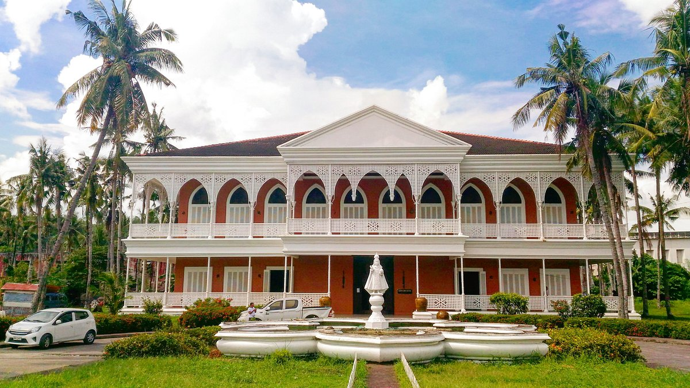
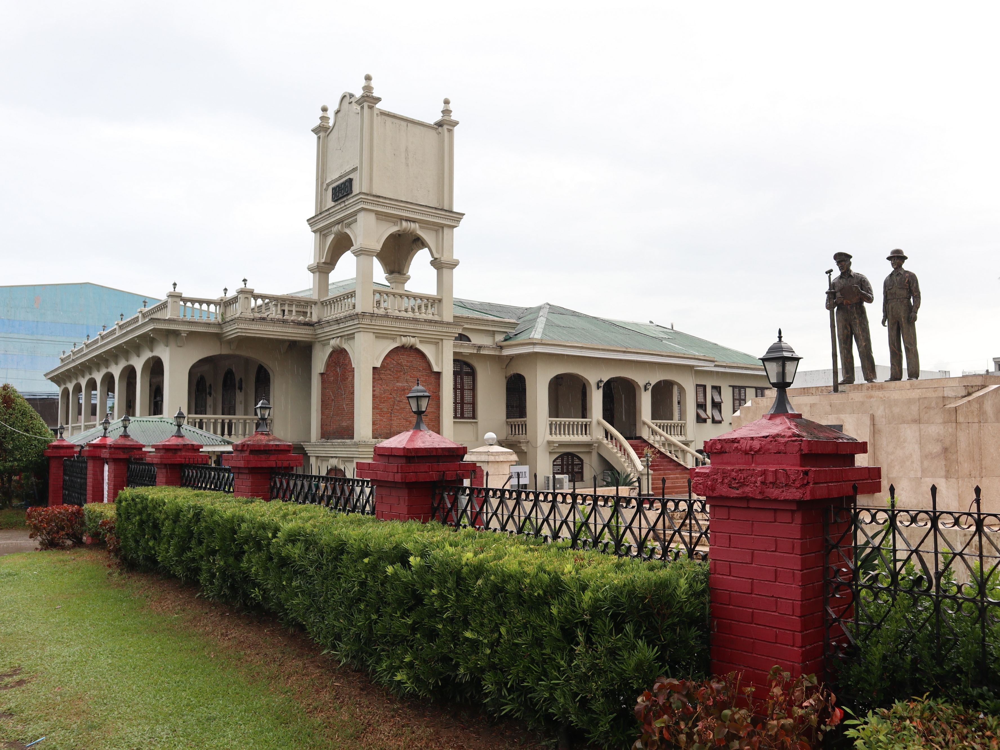
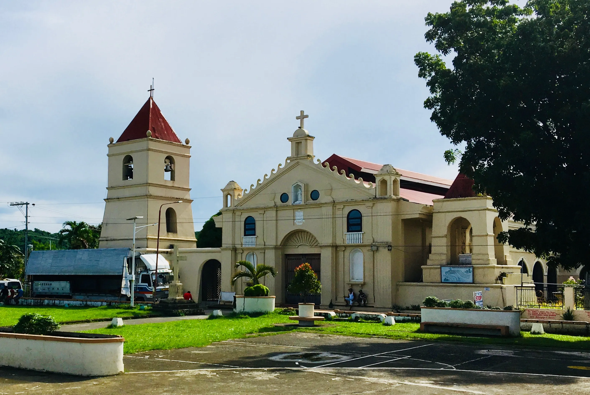

Leyte is home to a rich collection of museums and historic sites that bring its past to life, from wartime landmarks to cultural treasures. Across the province and nearby areas, visitors can explore places like Leyte Landing Memorial, Sto. Niño Shrine and Heritage Museum, and Price Mansion—each offering a unique glimpse into the region’s history, heritage, and identity.

Museums and historic sites in Leyte provide valuable insights into the province’s role in Philippine history, particularly during World War II. One of the most notable is the Sto. Niño Shrine and Heritage Museum in Tacloban City, known for its grand architecture and extensive collection of artworks, antiques, and memorabilia. Nearby, Price Mansion served as the headquarters of Douglas MacArthur during the Leyte campaign, offering a direct connection to the events that shaped the nation’s liberation.
Beyond wartime history, these sites also highlight the cultural and political development of the region. Many museums preserve local traditions, religious artifacts, and historical documents that tell the story of Leyte’s people through the centuries. Visiting these locations allows travelers to gain a deeper understanding of the province—not just as a destination, but as a place shaped by resilience, culture, and historical significance.

The Sto. Niño Shrine and Heritage Museum features lavish themed rooms, each decorated with unique artworks and materials.
Price Mansion served as the temporary headquarters of Douglas MacArthur during World War II
Many historic sites in Leyte are connected to the Leyte Landing, a key turning point in the war.
